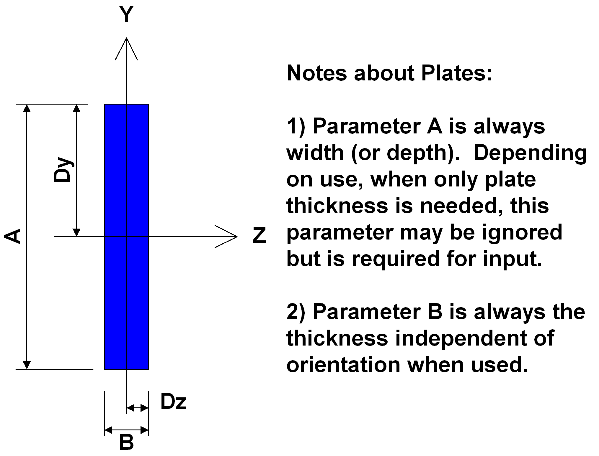
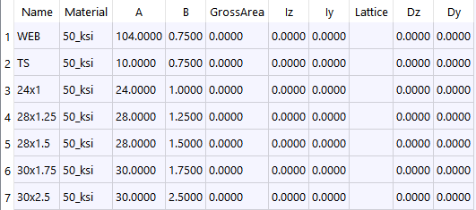

Input Plate Library
Table tbPlateLibrary
- PURPOSE
- Plates can be used as:
Parts of built-up sections
Web and Flange entry
Stiffeners
Bearing plates
Parameters
Field |
Type |
Units |
Description |
|---|---|---|---|
Name |
text |
Plate Name |
|
Material |
text |
Material Library Reference |
|
A |
real |
INC |
Parameter A - Height ( Local Y ) |
B |
real |
INC |
Parameter B - Width ( Local Z ) |
GrossArea |
real |
IN2 |
Gross Area used instead of computed value. |
Iz |
real |
IN4 |
Moment of Inertial about local Z axis used instead of computed values. |
Iy |
real |
IN4 |
Moment of Inertial about local Y axis used instead of computed values. |
Lattice |
chr |
[Y|N] Is this plate used as a lattice member. |
|
Dz |
real |
INC |
Distance to extreem fiber in positive local Z axis direction. Used instead of computed value. |
Dy |
real |
INC |
Distance to extreem fiber in positive local Y axis direction. Used instead of computed value. |

Example
